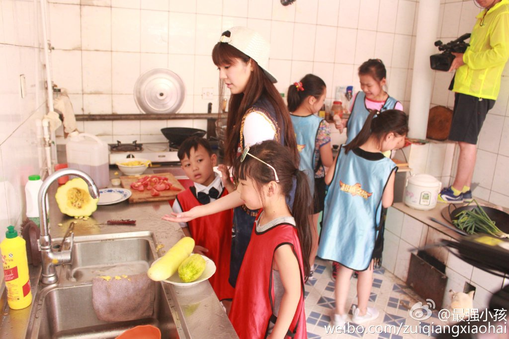

广清高速公路扩建工程由清远建筑有限建筑有限建筑有限广清高速公路扩建工程由清远建
2016-01-03 10:33:05 来源:designboom设计邦(北京)
近日，宅男女神赵奕欢加盟最新综艺节目，和一群“熊孩纸”打成一片，被孩纸们亲切地称为“大王欢”。
没想到，一向女神范儿的欢欢还是个贴心的邻家大姐姐。由于任务失败，欢欢需要给孩子们做一顿午餐，这可难坏了完全不会煮饭的欢欢。但是，欢欢女神还是欢欢乐乐地给孩子们做了一桌子菜，虽然过程有点曲折，味道有点不尽人意。最后，欢欢还担心孩子们因为饭菜不好吃而吃不饱，贴心地请求导演组给孩子们加餐。

节目录制当天是其中一个小朋友韩远琪的生日，但欢欢认为孩子生日应该吃一顿美味的，经过和导演组协商，最终由导演组提供丰盛的晚餐，欢欢则为韩远琪举办一个生日派对。
欢欢为了给韩远琪小朋友一个惊喜，悄悄将其他小朋友组织起来，兵分两路，安排才艺表演的小朋友彩排，然后自己和两个小朋友去采购蛋糕。此外，欢欢还贴心地请远在家中的韩爸爸给韩远琪录了祝福视频。在欢欢的精心准备下，小韩远琪过了一个难忘的生日。
在一天的节目录制中，欢欢的贴心举动远远不止这些！“大王欢”一直细心地照顾老幺，只有4岁的萱萱，下山抱着，睡觉抱着，完全就是萱萱的人肉坐垫。去采购蛋糕时，小萱萱睡着了，欢欢则留在车里守着他！！！
时间，这个虚无缥缈的东西，对于很多人来说是一把杀猪刀；对于欢欢而言，却是成长的催化剂。昔日叛逆少女程小雨经过时间的沉淀，已经变身为贴心的“大王欢”了。